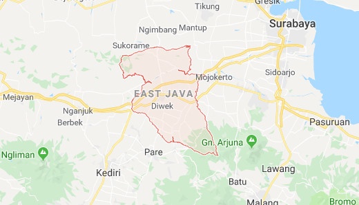
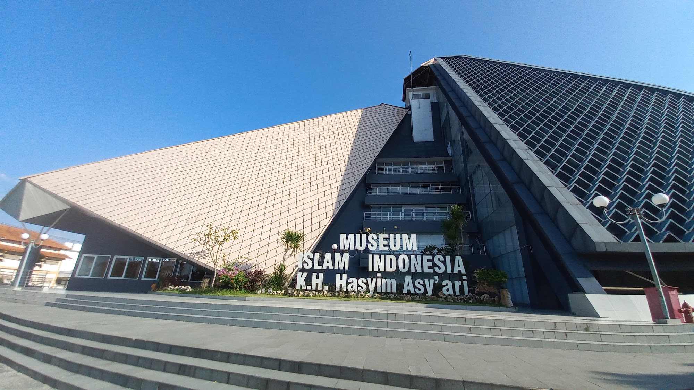

Sejarah

Kota Jombang (bahasa Jawa: Hanacaraka: ꦗꦺꦴꦩ꧀ꦧꦁ, Pegon: جَومباڠ; pengucapan bahasa Jawa: [ˈd͡ʒombaŋ]) adalah sebuah kabupaten yang terletak di bagian tengah Provinsi Jawa Timur, Indonesia. Ibu kotanya adalah Kecamatan Jombang. Kabupaten Jombang memiliki ketinggian 44 meter di atas permukaan laut, dan berjarak 79 km dari barat daya Surabaya, ibu kota Provinsi Jawa Timur. Luas wilayah kabupaten Jombang yakni 1.159,50 km². Pada tahun 2024, penduduk Jombang mencapai 1.376.547 jiwa, dengan kepadatan penduduk 1.187 jiwa/km2.
Geografis

Jombang memiliki posisi yang sangat strategis, karena berada di persimpangan jalur lintas tengah (Jakarta–Purwokerto–Yogyakarta–Ngawi–Surabaya) dan selatan Jawa (Bandung–Yogyakarta–Surabaya), jalur Surabaya-Tulungagung, serta jalur Malang-Tuban.
Identitas

Jombang dikenal dengan sebutan "Kota Santri," karena banyaknya institusi pendidikan Islam (pondok pesantren) di wilayahnya.Bahkan ada pemeo yang mengatakan Jombang adalah pusat pondok pesantren di tanah Jawa karena hampir seluruh pendiri pesantren di Jawa pasti pernah berguru di Jombang. Di antara pondok pesantren yang terkenal adalah Tebuireng, Denanyar, Tambak Beras, dan Darul Ulum (Rejoso).
Pariwisata
Jombang terkenal dengan berbagai tempat wisatanya dari wisata religi hingga wisata alam. Wisata religi yang terkenal di Jombang adalah makam berbagai tokoh nasional yang ada diJombang
Museum Islam Indonesia K.H Hasyim Asy'ari

Museum Islam Indonesia K.H Hasyim Asy'ari merupakan bangunan yang menyimpan koleksi dan informasi mengenai perkembangan Islam di Indonesia. Museum Islam Indonesia K.H Hasyim Asy'ari terletak di Kawasan Wisata Religi Makam Gus Dur, Desa Cukir, Kecamatan Diwek, Jombang. Masyarakat dapat mengunjungi museum ini secara gratis setiap hari pada pukul 08.30 - 15.20 WIB. Museum ini memiliki model bangunan berbentuk piramida dengan luas lahan sekitar 4,9 hektar. Pada bagian depan museum ini, terdapat monumen At-tauhid yang berhiaskan tulisan 99 Asmaul Husna. Saat ini, Museum Islam Indonesia K.H. Hasyim Asy'ari berada dalam naungan Museum dan Cagar Budaya, Kementerian Kebudayaan Republik Indonesia.